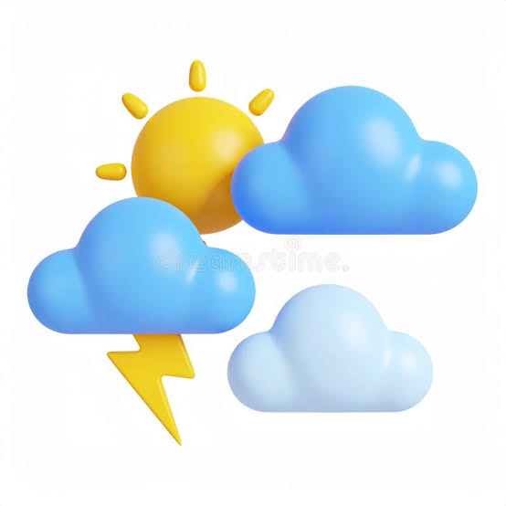

Bachelor of Science in Information Technology | Final Year Student
Below are some of the computing projects I have worked on during my studies.
Description: A web-based system for a school library. Librarians can add books, register members, issue and return books, and see which books are overdue.
Technologies used: PHP, MySQL, HTML and CSS
| Detail | Information |
|---|---|
| Type | Class project (Database Systems) |
| Year | 2025 |
| Role | Developer (group of 3) |
| Status | Completed |
Description: A simple portal where students can log in and view their semester results. It calculates the mean score and grade for each student.
Technologies used: HTML, CSS and JavaScript
| Detail | Information |
|---|---|
| Type | Personal project |
| Year | 2025 |
| Role | Sole developer |
| Status | Completed |

Description: A small web app that shows the current weather and a five-day forecast for any town the user searches for, using a free weather API.
Technologies used: HTML, CSS, JavaScript and OpenWeatherMap API
| Detail | Information |
|---|---|
| Type | Personal project |
| Year | 2026 |
| Role | Sole developer |
| Status | In progress |